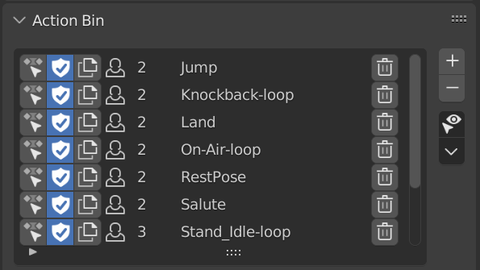
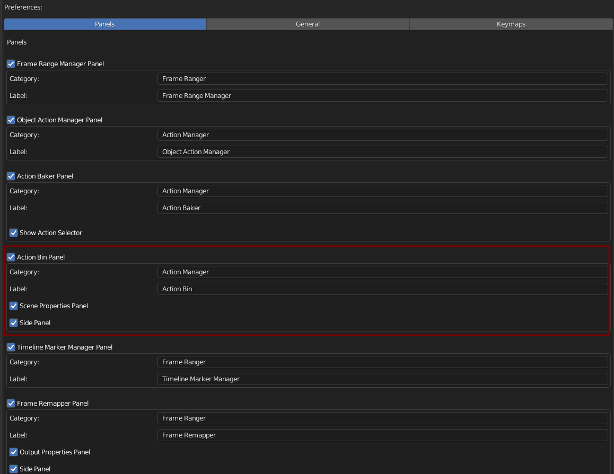

Action Bin
Action Bin Is Just List that Shows All the Action in this blend file, there is nothing special
List Out All the Actions in the Blender File, and helps managing it by providing some basic feature to work on them.
Preferences
You Can Enable / Disable, Rename Category, and Rename Label in Preferences
Default Category: Action Manager
Default Label: Action Bin
Action Bin is Accessible in:

Side Panel (Off by Default)
Scene Properties (On By Default)